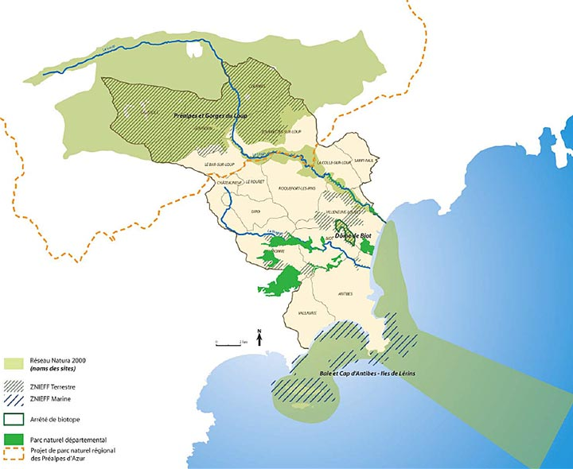

<!--<link href="../css/style.css" rel="stylesheet" type="text/css">-->
<link href="../css/style.css" rel="stylesheet" type="text/css" />
<meta http-equiv="Content-Type" content="text/html; charset=utf-8" />
<ion-view view-title="Accueil">
    <ion-content class="padding">
        <title>Les paysages - Les espaces naturels</title>
<div class="list card">
          <p><b><span class="titre">Les paysages</span></b><span class="titre"> - Les espaces naturels</span></p>
          <div class="div_100"></div>
          <div class="texte_justifie_100">
            <p><span class="gras">Réseau Natura 2000 : </span>L’objectif est d’identifier un réseau représentatif et cohérent d’espaces permettant d’éviter la disparition de milieux et d’espèces protégées. L’objectif premier du réseau est donc de recenser les activités humaines existantes, qui ont permis de maintenir cette biodiversité, afi n de les conserver et de les soutenir. Dès 1979, la «Directive Oiseaux» prévoit la création de Zones de Protection Spéciales (ZPS) afi n d’assurer la conservation d’espèces d’oiseaux jugées d’intérêt communautaire. En 1992, la «Directive Habitat» prévoit la création de Zones Spéciales de Conservation (ZSC) destinées à permettre la conservation d’habitats et d’espèces. Il s’agit donc d’une approche par milieux, ce qui débouche sur la notion de gestion territoriale, donc de développement durable.</p>
            <p><span class="gras">Arrêté de Biotope </span>: Afin de prévenir la disparition d’espèces protégées, le Préfet peut fi xer, par arrêté, les mesures tendant à favoriser, sur tout ou partie du territoire d’un département à l’exclusion du domaine public maritime, la conservation des biotopes tels que mares, marécages, marais, haies, bosquets, landes, dunes, pelouses ou toutes autres formations naturelles, peu exploitées par l’homme, dans la mesure où ces biotopes ou formations sont nécessaires à l’alimentation, à la reproduction, au repos ou à la survie de ces espèces.<br />
              <br />
            <span class="gras">Zones naturelles d’intérêt écologique, faunistique et fl oristique (ZNIEFF)</span> : C’est un inventaire national établi à l’initiative et sous le contrôle du Ministère de l’Environnement. Il est mis en oeuvre dans chaque région par les Directions Régionales de l’Environnement. L’inventaire identifi e, localise et décrit les territoires d’intérêt patrimonial pour les espèces vivantes et les habitats. Il organise le recueil et la gestion de nombreuses données sur les milieux naturels, la faune et la fl ore. Une ZNIEFF est un secteur du territoire particulièrement intéressant sur le plan écologique, participant au maintien des grands équilibres naturels ou constituant le milieu de vie d’espèces animales et végétales rares, caractéristiques du patrimoine naturel régional. C’est un outil de connaissance, qui ne constitue pas une mesure de protection juridique directe. Toutefois l’objectif de cet inventaire réside dans l’aide à la décision en matière d’aménagement du territoire vis-à-vis duprincipe de la préservation du patrimoine naturel.</p>
            <p>On distingue deux types de ZNIEFF :<br />
              - les ZNIEFF de type I, d’une superfi cie généralement limitée, défi nies par la présence d’espèces,d’associations d’espèces ou de milieux rares, remarquables ou caractéristiques du patrimoine naturel national ou régional<br />
            - les ZNIEFF de type II qui sont des grands ensembles naturels riches et peu modifi és, ou qui offrent des potentialités biologiques importantes.</p>
          </div>
        
</div>
        </ion-content>
</ion-view>
        